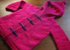
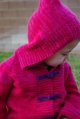

|
||
Premium Patterns Wintry Mix Mitts Love Bytes HawkeyeFree Patterns Kiddie Cadet Summerlin Ruffled Scarf Seamless DS Sock Simply Seamless Pouch Myriads of MushroomsExtras DIY Mitten Blocker Felt Patch Tutorial Yarn Dyeing Tutorial Needle Pouches Knitting Journal |
November 23, 2009 - Posted by Grace SchneblyDuck SoupProject Specs I am so glad we're back into blogging because I'll finally get to post some knits that I finished while we were on break! Honestly I didn't get much knitting done while we were gone, but I did finish up a few things and this jacket is one of my favorites. It was originally supposed to be a Christmas gift for my niece Jojo last year but didn't get it finished and sent to her until late spring! Yikes! Fortunately it fits her just perfectly this winter and should grow with her for the rest of the season. This little jacket was one of my favorite knits ever. I just love the style, and despite how long it took me to finish it was actually a fairly quick knit! The pattern was fun and laid out very clearly. It includes instructions for a wide range of sizes between 3 months to 4/5 years, and since the design is unisex, this pattern is a must have for anyone who has kids to knit for! Another thing that drew me to this pattern was that no buttons are required; you make your own icord buttons and loops so there is no need to run to the craft store at the last minute. The pattern calls for bulky weight yarn but I had three amazing skeins of Malabrigo in Scarlet that I bought specifically for a gift for Jojo and wanted to use those. I had never seen this colorway before and when I ordered it I was imagining a strong red, however it turned out to be a very vivid magenta. Two of the skeins were a bit darker and less varied than the first one I used and I should have alternated my skeins every few rows. You can kind of tell that the hood and shoulders of the jacket are a bit of a different shade than the rest, but I've learned to love it and I know Jojo doesn't mind. Since I switched to worsted weight yarn, I had to go up a needle size to US 9s to get gauge. In the end the jacket turned out to be a little lighter and just perfect for Las Vegas winters.
I will definitely be knitting another Duck Soup. I want to knit a 3 months size in green or yellow to keep on hand as a future baby gift and maybe a larger sized one to give to Camdyn before she gets too big. |
   Recent ReviewsRecent Posts
 Our Favorites
|
| © 2007 KathrynIvy.com | ||

{kind=link}
{kind=link}